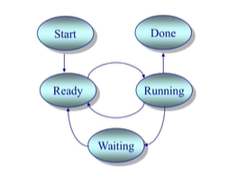

24、调度背景
| 创建时间： | 2020/3/27 10:56 |
| 更新时间： | 2020/3/27 11:03 |
| 作者： | 188mkzgr086 |
背景
-
上下文切换
- 切换CPU的当前任务，从一个进程/线程到另外一个
- 保存当前进程/线程在PCB/TCP中执行的上下文（CPU状态）
- 读取下一个进程/线程的上下文
-
CPU调度
- 从就绪队列中挑选一个进程/线程作为CPU将要运行的下一个进程/线程
- 调度程序：挑选进程/线程的内核函数（通过一些调度策略）
- 什么时候进行调度？
-
在进程/线程的生命周期中的什么时候进程调度？

- 内核运行调度程序的条件（满足其一）
- 一个进程从运行状态切换到等待状态
- 一个进程呗终结了
- 不可抢占
- 可以抢占
- 调度程序在中断响应后执行
- 当前的进程从运行切换到就绪，或者一个进程从等待切换到就绪
- 当前运行的进程可以被换出